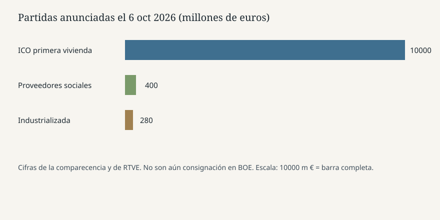

Madrid · Vivienda · 6 de octubre de 2026
El Consejo de Ministros aprobó de nuevo dos decretos de vivienda y los fía a la Diputación Permanente
_01.jpg)
Lo que coinciden las redacciones
El martes 6 de octubre de 2026 el Consejo de Ministros volvió a aprobar dos reales decretos-ley de vivienda, cuatro días después de que el Pleno del Congreso los rechazara el viernes 2 de octubre. Pedro Sánchez lo dijo en la rueda de prensa posterior en La Moncloa. RTVE, El Correo y Expansión coinciden en el hecho de la segunda aprobación y en que la convalidación, con las Cortes ya disueltas, corresponde a la Diputación Permanente y no al Pleno.
La cifra nueva más repetida es una línea de 10.000 millones de euros del Instituto de Crédito Oficial para préstamos de hasta 50.000 euros, sin intereses, destinados a la entrada de una primera vivienda, a devolver en diez años una vez pagada la hipoteca. RTVE añade 400 millones para proveedores de vivienda social y recuerda 280 millones ya previstos para construcción industrializada. Esas cantidades son anuncios del Ejecutivo. Este dossier no ha localizado, a la hora de cierre, el PDF del decreto en el BOE con la consignación.
El grueso del paquete, según RTVE, reproduce los textos caídos: prórroga de hasta dos años de contratos de alquiler vigentes hasta finales de 2028, protección frente a desahucios de inquilinos vulnerables, deducciones para pequeños propietarios, regulación del alquiler de temporada y por habitaciones, y un tipo del 10 por ciento para pisos turísticos. Sánchez dijo que hay “incorporaciones muy positivas” pero que se mantiene la esencia. Esa frase es su valoración, no un diff jurídico.
Lo que es solo cita
“Son medidas de puro sentido común, de humanidad” es una frase del presidente, no una medición de efecto. La comparación con “tres veces” el presupuesto del Ministerio de Vivienda y con “9.500 millones más” que la partida de Mariano Rajoy es una cifra del Ejecutivo. Ninguna de las piezas coteja el presupuesto histórico línea a línea. “Fondos buitre” es el término del Gobierno y de varios titulares. El texto descrito limita, hasta 2030, la compra por esos vehículos por debajo del 70 por ciento del valor de tasación y dice endurecer excepciones que el Ejecutivo aún no ha precisado. Sin el anexo, el endurecimiento es una promesa de redacción.
Sánchez reconoció, según RTVE, que el segundo decreto —la prórroga automática de alquileres sin límite temporal— no tiene posibilidades de convalidación. Esa es una predicción de votos, no un resultado. La Diputación Permanente tiene 69 miembros en el recuento de Expansión: 27 del PP, 24 del PSOE más la presidencia de Francina Armengol, seis de Vox, seis de Sumar, y uno de EH Bildu, PNV, Junts, ERC y el Mixto. RTVE dice que el empate lo deshace el PNV, que en el Pleno apoyó el primer texto y no el segundo. El voto futuro no está emitido.
El mecanismo que hace falta
Un real decreto-ley del artículo 86 de la Constitución entra en vigor al publicarse y decae si el Congreso no lo convalida en treinta días. El viernes el Pleno no convalidó. Un segundo decreto es un acto nuevo, no la resurrección automática del primero. Con las Cortes disueltas por el real decreto 806/2026, publicado hoy, el órgano que puede convalidar es la Diputación Permanente. Expansión cita fuentes parlamentarias según las cuales hace falta, además, que el asunto sea urgente para que la votación en ese órgano tenga validez. Esa condición es una lectura jurídica en disputa, no una sentencia.
La disolución no convierte al Gobierno en un ejecutivo en funciones el mismo día del decreto de convocatoria. El cese en funciones llega con la celebración de las elecciones, según la práctica constitucional habitual que los diarios recuerdan. Hasta el 29 de noviembre el Consejo puede seguir aprobando decretos-ley. Sánchez dijo que “vamos a continuar gobernando, no vamos a parar”. Eso describe su intención. No describe un título nuevo.
Lo que esta pieza no es
No es la prueba de que 10.000 millones estén ya comprometidos en crédito ICO firmado. No es un censo de desahucios evitados. No es un veredicto sobre si repetir un decreto rechazado es fraude de ley: Libertad Digital usa esa etiqueta en un titular de opinión enlazado; el hecho comprobable es la segunda aprobación y el cambio de cámara. No es una encuesta. El calendario electoral —campaña del 13 al 27 de noviembre, votación el 29, constitutivas el 23 de diciembre— está en el decreto de disolución, pieza distinta de este paquete de vivienda.
La fachada de La Moncloa es una fotografía de archivo. No muestra la mesa del Consejo ni a un inquilino. El gráfico de barras solo escala los tres números dichos en público.

Artículos fuente y puntuaciones
RTVE separa anuncio y convalidación, pero adopta “fondos buitre” en el titular. Expansión carga “de espaldas al Congreso”, un juicio de procedimiento. La página de Moncloa es la retransmisión del propio Gobierno.